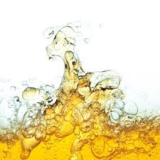

Газойль каталитический
Производят дистилляцией нефти, или продуктов её переработки (если он не был отделен в процессе перегонки). При прямой перегонке нефти в условиях атмосферного давления получают атмосферный газойль, который наиболее распространен, при давлении 10-15 кПа (0,09-0,15 Атм) вакуумный газойль
Сера техническая
Основным методом получения материала является переработка нефти и нефтепродуктов. На сегодняшний день для этого используются высокосернистые или альтернативные составы, в частности, битумная нефть. Кроме того, сера техническая производится путем химической очистки сероводорода и сернистого ангидрида, которые в обилии находятся в составе природного газа. Вещество можно получить и посредством пароводяных, фильтрационных, термических, экстракционных, а также центрифугальных методов..
Битум дорожный
Природные битумы не являются сами по себе товарным продуктом, как нефть или газ. Для получения из них товарного продукта нужны дополнительные технологические процессы. В качестве товарного продукта переработки природных битумов может рассматриваться «синтетическая нефть» — вид сырья, альтернативный природной нефти.